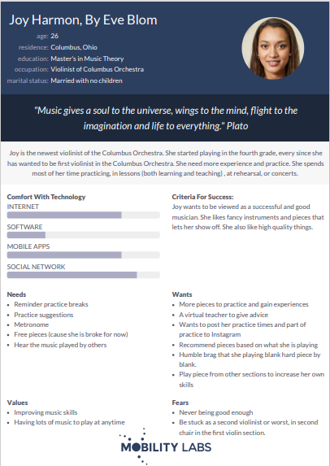

Problem Statement

All instruments want to play parts from other instruments, but it can be hard to translate the piece to their range and clef. Musicians also want to know what the piece sounds like a group, for their instrument, or for other instruments/sections.
Affinity Diagram

Together, my group and I, thought of different features and problems we may face in creating the app.
Personas: 5 Personas for Music App
I thought of the types of person that would want to use our app. I created one of them. My team thought as well and created the other four personas.
Storyboards: 5 Storyboards for Music For All App

I made up a story for my persona that I created above. I thought of what why she would want to use the app and what features she would like. Then included them in my story! My team did the same for their personnas as well.
Sketches: 5 Sketches for Music For All App
I made sketches of what the app could look like. This are rough thoughts and ideas of how the different screens of the app may look. My team members did the same.
Paper Protype
I used the sketches I made last time to make more detailed verisons of every screen. Then I had made of video of me using the sketches to walk through using the app. Exploring how it may be used and may look like. My team members did the same.
High-Fi Protype
My team and I used proto.io to create different screens of the lab. You are able to use the protype like you would the app.